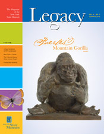

New Website Features - 2011
Listed below are the most recent additions and changes to the People of Colonial Albany Live Here website. Included is the date each web page was activated or substantially revised. Click on the highlighted text to take you to the new feature.
Some/many of the new pages listed below items may appear to relate to lives of ordinary/average people and to things and issues of seemingly small significance. However, we consider each of them to be extremely important to the overall early Albany story and really do intend to illuminate/present every significant element in this format. Please remember that we consider every page to be "in-progress" and are revised on an ongoing basis!
Comments and suggestions are always welcome!

Linked resource page on Pinkster in early Albany (12/30/11)
Revised visual supplement on the "first Church in Albany" (12/30/11)
Biographical sketch of Ann Thompson (12/30/11)
Biographical sketch of Petrus Vandenbergh (12/10/11)
Biographical sketch of Ralph Thompson (12/10/11)
Biographical sketch of Silas W. Howell (12/10/11)
Linked transcription of the will of Cornelis Gysbertsen Vandenbergh - 1714 (12/10/11)
Biographical sketch of Thomas W. Stanton (11/10/11)
Biographical sketch of Gysbert C. Vandenbergh (11/10/11)
Biographical sketch of Lena Ten Eyck Lansing (11/10/11)
Outline sketch sketch of Ann Begley (11/10/11)
Biographical sketch of Michael Begley (11/10/11)
Biographical sketch of John Mc Gourck (11/10/11)
Biographical sketch of Nicholas Radcliff (11/10/11)
Biographical sketch of William Zoble (11/10/11)
Biographical sketch of William Sole (11/10/11)
Linked address of the "Albany Federal Committee" - 1788 (11/10/11)
Notes on the life of Henry Zoble (11/5/11)
Biographical sketch of Gerrit Yates Lansing (11/5/11)
Biographical sketch of Anna Gansevoort Quackenbush (11/5/11)
Biographical sketch of Gerrit Quackenbush (11/5/11)
Biographical sketch of Alexander Chesnut (10/30/11)
Biographical sketch of Lewis Benedict (10/30/11)
Pre-emptive biographical sketch of Stuart Wilson (10/30/11)
Biographical sketch of Elizabeth Waldron Myndertse (10/20/11)
Partially linked transcription of the estate inventory for Jacob A. Van Schaick - 1787 (10/20/11)
Biographical sketch of Elizabeth Visscher Glen (10/20/11)
Biographical sketch of Daniel Steele (b. 1772); (10/15/11)
Biographical sketch of Elizabeth Van Benthuysen Steele (10/15/11)
Biographical sketch of Abraham Quackenbush (10/15/11)
Biographical sketch of Hendrickie Van Ness Oothout (10/15/11)
Biographical sketch of Jan Janse Oothout (10/15/11)
Linked transcription of calendar entry of the will of Jan Oothout - 1688 (10/15/11)
Biographical sketch of Eli Arnold (10/10/11)
Biographical sketch of Lyntie Ten Eyck Douw (10/10/11)
Biographical sketch of Maria De Ridder Vandenbergh (10/5/11)
Biographical sketch of Anna Hagadorn Kidney (10/5/11)
Biographical sketch of William Bay (10/5/11)
Biographical sketch of William Caldwell (10/5/11)
Biographical sketch of Frederic Myndertse Van Iveren (10/5/11)
Biographical sketch of Patrick Gahagan (9/30/11)
Biographical sketch of Rev. Andrew Bay (9/30/11)
Biographical sketch of Willempie Hansen Van Schaick (9/30/11)
Biographical sketch of Henry Glen Van Ingen (9/30/11)
Linked outline of the will of William Van Ingen - 1799 (9/20/11)
Biographical sketch of Elizabeth Barnes Caldwell (9/20/11)
Biographical sketch of Bridget Wheeler Seeger (9/20/11)
Linked access page on the Stafford family (9/20/11)
Biographical sketch of Thomas Spencer (9/20/11)
Biographical sketch of Job Stafford (9/20/11)
Biographical sketch of Susannah Spencer Stafford (9/20/11)
Biographical sketch of George Hutton, Jr. (9/10/11)
Linked transcription of the will of William Mc Cew - 1771 (9/10/11)
Biographical sketch of Mary Burk Mc Cew (9/10/11)
Biographical sketch of William Mc Cew (9/10/11)
Biographical sketch of Hilletie Loockermans Muller (9/10/11)
Biographical sketch of Cornelis Stephense Muller/Mulder (9/10/11)
Biographical sketch of Gideon Fairman (9/10/11)
Biographical sketch of Margaret Lynott Hutton (9/5/11)
Biographical sketch of Philip Muller (9/5/11)
Linked transcription of the will of Thomas Lynott - 1769 (9/5/11)
Biographical sketch of Elizabeth Vinhagen Oothout (8/30/11)
Biographical sketch of Elizabeth Lansing Oothout (8/30/11)
Biographical sketch of Anna Oothout Quackenbush (8/30/11)
Biographical sketch of Dorothea Hallenbeck Stafford (8/30/11)
Biographical sketch of Roeloff Seeger (8/20/11)
Biographical sketch of Thomas Seeger (8/20/11)
Biographical sketch of Johannes Seeger (8/20/11)
Biographical sketch of Cornelis Van Schaick (b. 1736); (8/20/11)
Biographical sketch of Daniel S. Van Antwerpen (8/20/11)
Biographical sketch of James Burk (8/20/11)
Biographical sketch of Peter Jones (8/10/11)
Biographical sketch of Ann Caldwell Low (8/10/11)
Biographical sketch of Abigail Winne Jones (8/10/11)
Biographical sketch of Catherine de Wever Stoop (8/10/11)
Biographical sketch of John H. Chestney (8/10/11)
Biographical sketch of Livinius B. Winne (7/30/11)
Biographical sketch of Maria Lansing Winne (7/30/11)
Linked transcription of the will of John H. Ten Eyck - 1792 (7/20/11)
Biographical sketch of Anna Cooper Lansing (7/30/11)
Biographical sketch of Rebecca Hooghkerk Mc Chestney (7/30/11)
Biographical sketch of George Hutton (7/30/11)
Biographical sketch of Isaac Hutton (7/30/11)
Biographical sketch of Jonas Oothout (7/30/11)
Biographical sketch of Spencer Stafford (7/20/11)
Biographical sketch of John Stafford (7/20/11)
Biographical sketch of Anna Sickles Young (7/20/11)
Biographical sketch of Lambert Cole (7/20/11)
Biographical sketch of Maria Kidney Cole (7/20/11)
Biographical sketch of Gysbert Vandenbergh (d. 1715); (7/10/11)
Biographical sketch of Gysbert Cornelisse Vandenbergh (7/10/11)
Biographical sketch of Rebecca Hooghkerk Van Zandt (7/10/11)
Biographical sketch of Johannes Muller (b. 1731); (6/30/11)
Biographical sketch of Sara Van Iveren Muller (6/30/11)
Biographical sketch of Elizabeth Hallenbeck Muller (6/30/11)
Biographical sketch of Johannes Muller (1691-1727); (6/30/11)
Linked transcription of the will of Isaac Casperse Hallenbeck - 1708 (6/30/11)
Biographical sketch of Jacob Muller (6/30/11)
Biographical sketch of Sara Bradt Van Iveren (6/20/11)
Biographical sketch of Rynier Myndertse Van Iveren (6/20/11)
Biographical sketch of Hendrick De Ridder (6/20/11)
Biographical sketch of Jacob C. Schermerhorn; his will (6/20/11)
Biographical sketch of Anna Beekman Schermerhorn (6/20/11)
Biographical sketch of Sybrant Douw (6/10/11)
Biographical sketch of Jan Evertse (6/10/11)
Biographical sketch of Jacob Kidney (6/10/11)
New access page on the Everts family (5/30/11)
Biographical sketch of Wynant Vandenbergh (5/30/11)
Biographical sketch of William Gill/Giles (5/30/11)
Biographical sketch of Conrad Soop (5/30/11)
Biographical sketch of Johannes Van Hoesen (5/20/11)
New access page on the Van Hoesen family (5/20/11)
Biographical sketch of Sara Visscher Van Zandt (5/20/11)
Biographical sketch of Benjamin Van Zandt (5/20/11)
Biographical sketch of Maria Staats Lansing (5/10/11)
Biographical sketch of John E. Lansing (5/10/11)
New access page on the Kidney family (5/10/11)
Biographical sketch of Geertruy Coeymans Vosburgh (5/10/11)
Biographical sketch of Jan Winne (b.1707); (5/10/11)
Biographical sketch of Santje/Susanna De Ridder Winne (5/10/11)
Biographical sketch of Rachel Verplanck Winne (5/1/11)
Biographical sketch of Jan Winne (b.1735); (5/1/11)
Biographical sketch of Francis Stoop (4/20/11)
Biographical sketch of Dr. James Low (4/20/11)
Biographical sketch of Sebastian Visscher (4/15/11)
Biographical sketch of Rosanna Shipboy Visscher (4/15/11)
Biographical sketch of Barent Vosburgh (4/15/11)
Biographical sketch of James Lightbody (4/15/11)
Biographical sketch of Evert Lansing (4/15/11)
Biographical sketch of Jacob Claese Egmont (4/15/11)
Biographical sketch of Anna Gerritsen Vosburgh (4/15/11)
Biographical sketch of Engeltie Hansen (4/10/11)
Biographical sketch of Cornelia Bogardus (4/10/11)
Biographical sketch of Andries De Vos (4/10/11)
Biographical sketch of Jacob Egmont (4/10/11)
Biographical sketch of Anna Lansing Egmont (4/10/11)
Biographical sketch of Ariaantie Coeymans Verplanck (4/10/11)
Biographical sketch of David Verplanck; his will (3/25/11)
New access page on the Sickles family (3/20/11)
Biographical sketch of Jacob Cuyler, Jr. (3/20/11)
Biographical sketch of Barent Visscher (b.1737); (3/20/11)
Biographical sketch of Sara Van Schaick Lansing (3/20/11)
Biographical sketch of Albert Hansen (3/20/11)
Biographical sketch of Sara Visscher (3/10/11)
Biographical sketch of Sara Wyngaert Visscher (3/10/11)
Biographical sketch of Harman B. Visscher (3/10/11)
Baseline biographical sketch of Christopher Hawk (3/5/11)
Biographical sketch of Jacob S. Bogardus (3/5/11)
Biographical sketch of Pieter Bogardus (3/5/11)
Biographical sketch of Cornelia Cooper Hallenbeck (2/25/11)
Biographical sketch of Debora Staats Graham (2/25/11)
Biographical sketch of Elizabeth Sears Hawley (2/25/11)
Biographical sketch of Isaac Verplanck (b.1725) (2/20/11)
Baseline sketch of Myndert Vosburgh (2/20/11)
Biographical sketch of Maria Bogert Verplanck (2/10/11)
Biographical sketch of Jacob Van Woert (b.1724) (2/20/11)
Biographical sketch of Catharina Van Schaick Coeymans (2/10/11)
Biographical sketch of Nathan Hawley (2/10/11)
Biographical sketch of David Gibson (2/10/11)
Biographical sketch of Bastian H.Visscher (2/10/11)
Biographical sketch of Samuel Coeymans (2/10/11)
Biographical sketch of Anna Pearse Visscher (1/25/11)
Biographical sketch of John T. Visscher (1/25/11)
Biographical sketch of William Snyder (1/20/11)
Biographical note on Rynier J. Van Iveren (1/20/11)
Biographical sketch of Christopher Lansing (1/20/11)
Biographical sketch of Anthony Hallenbeck (1/20/11)
Baseline biographical sketch of John Skidmore (1/20/11)
Baseline biographical sketch of Jacob Verplanck (1/20/11)
Baseline biographical sketch of Isaac Vosburgh (1/20/11)
Biographical sketch of Paul Hogstrasser (Hochstrasser) (b.1765) (1/10/11)
Biographical sketch of Bata Van Deusen Hun (1/10/11)
Biographical sketch of Thomas D. Hun (1/10/11)
Biographical sketch of Abraham Vosburgh (1/10/11)
bios indexed by SB2 thru 9/30/11
Home | Site Index | Navigation | Email | New York State Museum
Did you know that the items formally announced in the "New Features" sections include links to many more persons, places, and things that are not yet ready to be publicized? Those incomplete features have been posted online either "silently" or "privately." Please remember that every item you find on The People of Colonial Albany Live Here website is in-progress and likely to be augmented, refined, corrected, and otherwise changed whenever necessary. In fact, many files are updated every day. The "last revised" date given at the bottom of most pages references some of this editing.